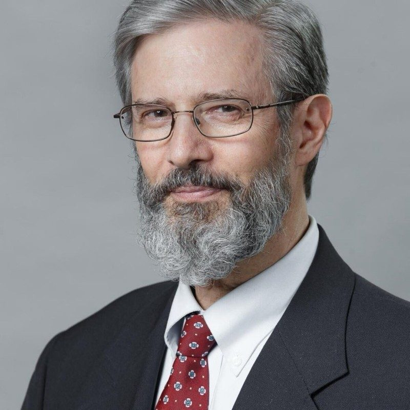

Andrew Likoudis
Chairman & President
Andrew Likoudis is a Catholic writer, editor, and consultant based in Baltimore. As founder and chairman of the Likoudis Legacy Foundation, he carries forward the ecumenical and apologetic legacy of his grandfather, theologian James Likoudis. His work occupies the center of the intra-Catholic debate: irenic toward the tradition, critical of its ideological capture, and committed to a Vatican II read in genuine continuity with what preceded it. He contributes regularly to Where Peter Is, the National Catholic Register, and Philosophy Now, and is completing an M.A. in Catholic Studies at Franciscan University of Steubenville.
- Editor, Faith in Crisis: Critical Dialogues in Catholic Traditionalism, Church Authority, and Reform — with a foreword by philosopher-statesman Rocco Buttiglione (En Route Books, 2024)
- Editor-in-Chief, The Kydones Review
- Contributor: National Catholic Register, Where Peter Is, EWTN News, Philosophy Now
- M.A. Candidate in Catholic Studies, Franciscan University of Steubenville (expected 2026)
andrewlikoudis.com →

Philip Blosser, PhD
Board Member
Born in China and raised in Japan, Blosser earned his BA from Sophia University in Tokyo and his PhD from Duquesne University. He is the author of Scheler's Critique of Kant's Ethics and blogs at Musings of a Pertinacious Papist.
- Professor of Philosophy, Sacred Heart Major Seminary
- Secretary, Max Scheler Society of North America

Mike Aquilina
Board Member
Co-founder of the St. Paul Center for Biblical Theology with Scott and Kimberly Hahn. He has hosted eleven television series on EWTN and edited New Covenant magazine. A songwriter whose work has been recorded by Paul Simon, Van Morrison, and Bruce Springsteen.
- Executive Vice President, St. Paul Center for Biblical Theology
- Author of over 70 books on Catholic history and devotion
- Contributing editor, Angelus News

Will Deatherage
Board Member
Deatherage holds an M.A. in Historical-Systematic Theology from The Catholic University of America. He specializes in digital marketing and development for Catholic organizations and publishes theological resources through Clarifying Catholicism.
- CEO, Catholics for Hire LLC
- Executive Director, Clarifying Catholicism
- Executive Director, The New Realist Project

Robert Fastiggi, PhD
Board Member
Dr. Fastiggi holds an M.A. and Ph.D. from Fordham and has taught at Sacred Heart Major Seminary since 1999. He co-edited the English translation of the 43rd edition of Denzinger-Hünermann (Ignatius Press, 2012).
- Bishop Kevin M. Britt Chair of Dogmatic Theology, Sacred Heart Major Seminary
- Co-editor, Denzinger-Hünermann 43rd ed. (Ignatius Press, 2012)
- President Emeritus, Mariological Society of America

Stephen Krason, PhD, JD
Board Member
Dr. Krason earned his J.D. and Ph.D. in Political Science at SUNY Buffalo and an M.A. in Theology from Gannon University. He is admitted to the bar of the U.S. Supreme Court. In 1992 he co-founded the Society of Catholic Social Scientists, which he has led ever since.
- Professor Emeritus of Political Science and Legal Studies, Franciscan University of Steubenville
- Co-Founder, President & Chairman, Society of Catholic Social Scientists
- Admitted to the bar of the U.S. Supreme Court

A devoted layman-ecumenist with decades of engagement in Catholic-Orthodox dialogue. He founded Eastern Christian Publications in 1993 and has chaired the Orientale Lumen Foundation since its inception. He has been received in private audience by Ecumenical Patriarch Bartholomew.
- Publisher, Eastern Christian Publications (Fairfax, VA)
- Chairman, Orientale Lumen Foundation and Conferences
- Sponsor, Figel Event for Ecumenism — Washington Theological Consortium